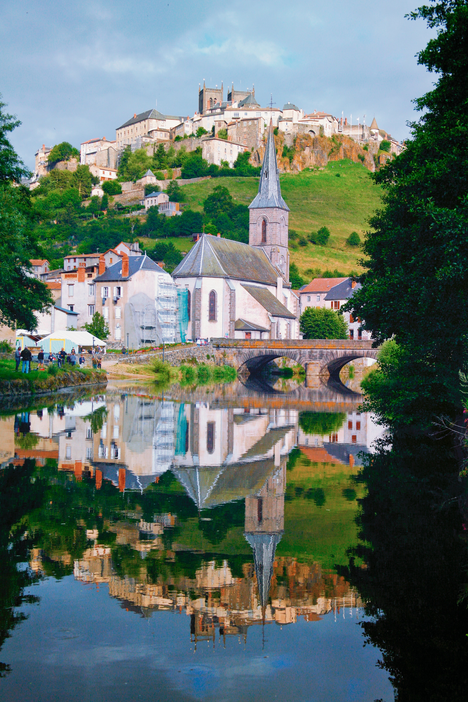

Welcome to pod
Tablou Canvas - Padure, Copaci, Pod, Lac, Frunze, Toamna, Natura, Peisaj, 75 x 100 cm - eMAG.ro
2020.10.01 20:45
Tablou Canvas - Padure, Copaci, Pod, Lac, Frunze, Toamna, Natura, Peisaj, 75 x 100 cm
309 40 Lei (- 58% )
129 00 Lei
Laptop, Tablete & Telefoane PC, Periferice & Software TV, Audio-Video & Foto Electrocasnice & Climatizare Gaming, Carti & Birotica Bacanie Fashion Ingrijire personala & Cosmetice Casa, Gradina & Bricolaj Sport & Activitati in aer liber Auto, Moto & RCA Jucarii, Copii & Bebe Supermarket Laptop, Tablete & Telefoane PC, Periferice & Software TV, Audio-Video & Foto Electrocasnice & Climatizare Gaming, Carti & Birotica Bacanie Fashion Ingrijire personala & Cosmetice Casa, Gradina & Bricolaj Sport & Activitati in aer liber Auto, Moto & RCA Jucarii, Copii & Bebe Supermarket (mobile) Open search Contul meu Favorite Cosul meu Produse (deschide megameniul) eMAG Genius Resigilate Necesare zi de zi Extra-reducerile momentului Outlet Tazz by eMAG Vezi mai mult eMAG Help Casa, Gradina & Bricolaj Decoratiuni Decoratiuni Interioare Tablouri Tablouri Tablouri DecorTablou Canvas - Padure, Copaci, Pod, Lac, Frunze, Toamna, Natura, Peisaj, 75 x 100 cm
Cod produs: 02262*2824 Share Compara norand10Opinia clientilor:
Adauga un review | Adauga intrebare
Vândut și livrat de: NORAND 4.6 detalii Beneficii:Deschiderea coletului la livrare
30 zile drept de retur
Norand10:Ai 10% extra-reducere la produsele “Norand”, semnalizate în promoție. Adaugă produsul în coș, completează codul ”Norand10” și beneficiezi de 10% extra-reducere din prețul afișat.
vezi detaliiIti mai recomandam si
-58% -58% Tablou Canvas - Peisaj, Cascada, Munte, Copaci, Casuta, Toamna, Apus de soare, 50 x 100 cm 4.96 (27)
238 00 Lei (-58%)
98 77 Lei
-39% -39% Tablou Canvas - Podulet in toamna, 75 x 100 cm
214 20 Lei (-39%)
129 00 Lei
Tablou Munti 03, 100 x 70 cm
135 00 Lei
Tablou Peisaj 08, 100 X 70 cm
135 00 Lei
Tablou Canvas Peisaj de Toamna cu Toamna pe malul lacului, 80 x 120 cm 5 (5)
160 00 Lei
-54% -54% Tablou Canvas Linie de brazi, 80 x 140 cm
559 36 Lei (-54%)
256 68 Lei
Page navigation
Descriere Specificatii Review-uri Intrebari si raspunsuriDescriere
Pentru a pune in valoare creatia originala, utilizam panze dintr-o compozitie speciala, cerneluri ecologice si o tehnologie superioara de tiparire. Tehnologia si materialele pe care le folosim asigura claritatea formei, intensitatea culorilor si durabilitatea indelungata a print-urilor noastre.
Va oferim un print de calitate, pe panza Artist CANVAS. Aceasta este intinsa pe un cadru de lemn uscat si prelucrat, cu grosime de 3,5 cm. Tabloul este ambalat cu grija si livrat gata pentru expunere. Imaginile au caracter informativ, iar nuanta tonurilor poate diferi de la un monitor la altul. De asemenea, este recomandat ca, inainte de a comanda un tablou, sa masurati peretele pe care va fi plasat, astfel incat sa nu para nici prea mic si nici prea mare.
.
Vezi mai mult
Specificatii
Caracteristici
Tip produs Tablou Numar bucati/set 1 Forma Dreptunghi Orientare Landscape Tip rama Cu rama Tehnica Print digital Tema Natura Material Panza Material tablou Panza Material rama MDF Tip peisaj Toamna Tip vopsea Cerneala Detalii Cerneala fara miros Sistem de prindere Inclus Informatii suplimentare Cerneala fara mirosCompozitie
Compozitie panza, lemnDimensiuni
Lungime 100 cm Latime 75 cm Grosime 3.5 cm Cantitate 1Brand: Tablouri Decor
eMAG.ro face eforturi permanente pentru a păstra acurateţea informaţiilor din acestă pagină. Rareori acestea pot conţine inadvertenţe: fotografia are caracter informativ şi poate conţine accesorii neincluse în pachetele standard, unele specificaţii pot fi modificate de catre producător fără preaviz sau pot conţine erori de operare. Toate promoţiile prezente în site sunt valabile în limita stocului.
Alti clienti au vizitat si
-58% -58% Tablou Canvas - Peisaj, Cascada, Munte, Copaci, Casuta, Toamna, Apus de soare, 50 x 100 cm 4.96 (27)238 00 Lei (-58%)
98 77 Lei
Tablou Peisaj 08, 100 X 70 cm
135 00 Lei
-39% -39% Tablou Canvas - Podulet in toamna, 75 x 100 cm214 20 Lei (-39%)
129 00 Lei
Tablou Munti 03, 100 x 70 cm
135 00 Lei
-39% -39% Tablou Canvas - Fall Serene, 75 x 100 cm 5 (1)214 20 Lei (-39%)
129 00 Lei
-44% -44% Tablou Canvas Led cu intrerupator, Luminos in intuneric, Premium Art Factory TrueColor Peisaj, Multicolor, Cascada intre copacii verzi, Panza pe cadru de lemn, Decoratiuni Moderne pentru Casa, 30 x 45 cm226 60 Lei (-44%)
126 54 Lei
Review-uri
Fii primul care scrie un review
Spune-ti parerea acordand o nota produsului
Rating: Adauga un reviewRecent adaugate la Favorite
-58% -58% Tablou Canvas - Peisaj, Cascada, Munte, Copaci, Casuta, Toamna, Apus de soare, 50 x 100 cm 4.96 (27)238 00 Lei (-58%)
98 77 Lei
-50% -50% Set Tablou DualView Startonight Apus pe lac, 7 piese, luminos in intuneric, 100 x 240 cm 4.64 (28)699 99 Lei (-50%)
349 99 Lei
-8% -8% Tablou Canvas - Wild Poppies II, 50 x 100 cm 4.93 (30)108 29 Lei (-8%)
98 77 Lei
-50% -50% Tablou DualView Startonight Artar toamna, luminos in intuneric, 80 x 120 cm 4.6 (40)300 00 Lei (-50%)
150 00 Lei
-58% -58% Tablou Canvas - Valuri, Mare, Abstract, Albastru, 80 x 120 cm 4.69 (16)357 00 Lei (-58%)
148 75 Lei
-37% -37% Tablou Canvas - Flori, Magnolia, 80 x 120 cm 4.78 (9)238 00 Lei (-37%)
148 75 Lei
Intrebarile si raspunsurile clientilor
Ai nelamuriri?
Pune o intrebare si poti primi raspuns de la comunitate.
Pune o intrebareLinkuri utile:
Decoratiuni Tablouri Tablouri Tablouri Decor Tablouri - Promotii Tablouri - Noutati Tablouri - Resigilate Tablouri - Mandala Art Tablouri - Art Factory Tablouri - heartwork Tablouri - 5 Tablouri - Da Tablouri - Tablou Tablouri - Set tablouri Tablouri - Artizanat Tablouri - Abstract Tablouri - Animale Tablouri - BucatarieAlții au căutat și:
Tablou frunze Lac lemn sadolinVezi mai mult
Istoricul tau de navigare
Alti vizitatori au fost interesati si de:
sterge istoricul de navigare
Creste-ti afacerea!
Acces instant la sute de mii de clienti unici , zilnic Inregistrarea afacerii tale este gratuita Esti la doar cateva click-uri de vanzari spectaculoase Vreau sa vand pe eMAGCreste-ti afacerea!
Acces instant la sute de mii de clienti unici Inregistrarea afacerii tale este gratuita Esti la un pas de vanzari spectaculoase Vreau sa vand pe eMAGSolutii B2B.
Oferte speciale de business Solutii IT personalizate Consultanti dedicati Vreau o ofertaDescarcă aplicația eMAG
Lasă-ne numărul tău de telefon și îți vom trimite link-ul de download. Google Play Apple Store Servicii pentru clienti Deschiderea coletului la livrare 30 de zile drept de retur Plata cu cardul in rate fara dobanda Finantare in rate prin eCREDIT Garantii si service Black Friday eMAG Comenzi si livrare Contul meu la eMAG Cum comand online Livrarea comenzilor eMAG Corporate eMAG Marketplace Modalitati de finantare si plata Suport clienti Formular reparatie produs Formular returnare produs Contact Conditii generale privind furnizarea serviciilor postale ANPC ANPC - SAL eMAG.ro Vreau sa vand pe eMAG Termene si conditii Prelucrarea datelor cu caracter personal Politica de utilizare Cookie-uri Solutionarea Online a litigiilor Programele Fundatiei eMAG Copyright © 2001-2020 Dante International, CUI: 14399840, Reg. Com. J40/372/2002 Varianta mobile emag.bg emag.hu